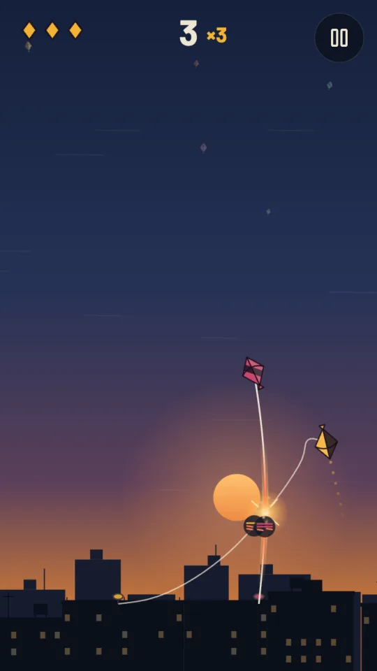
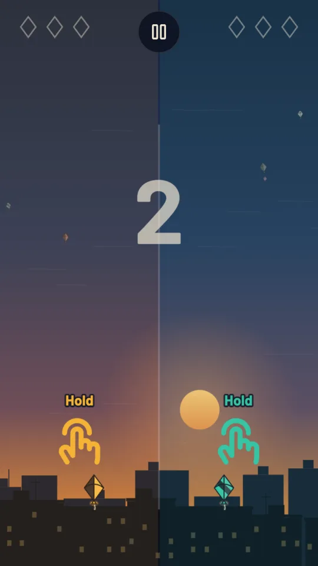
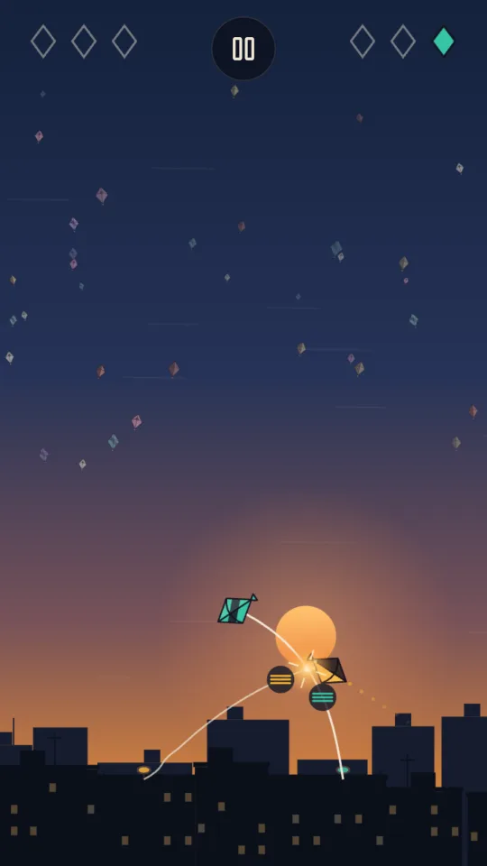
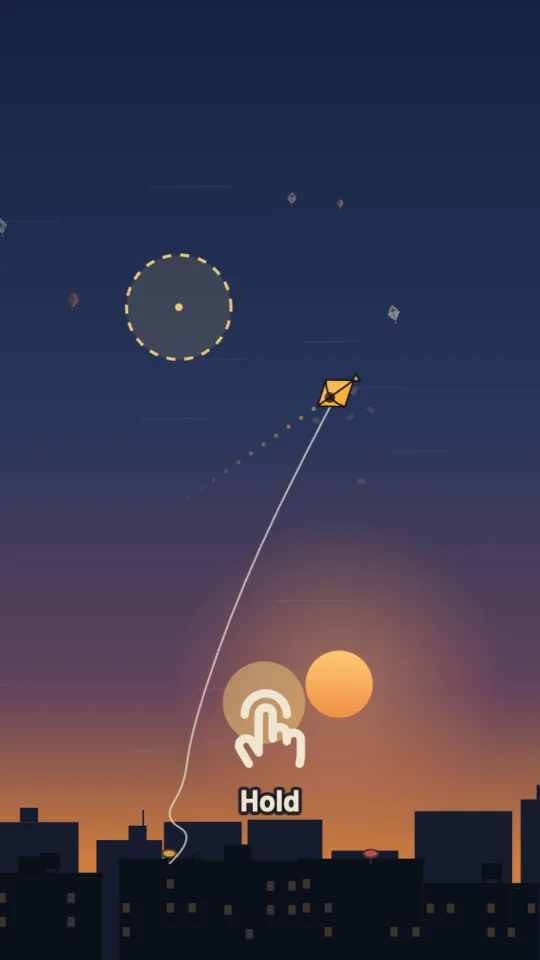
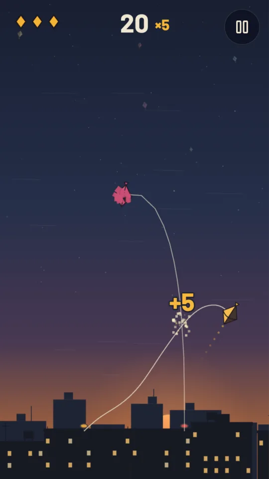
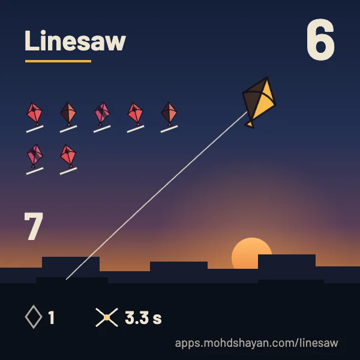
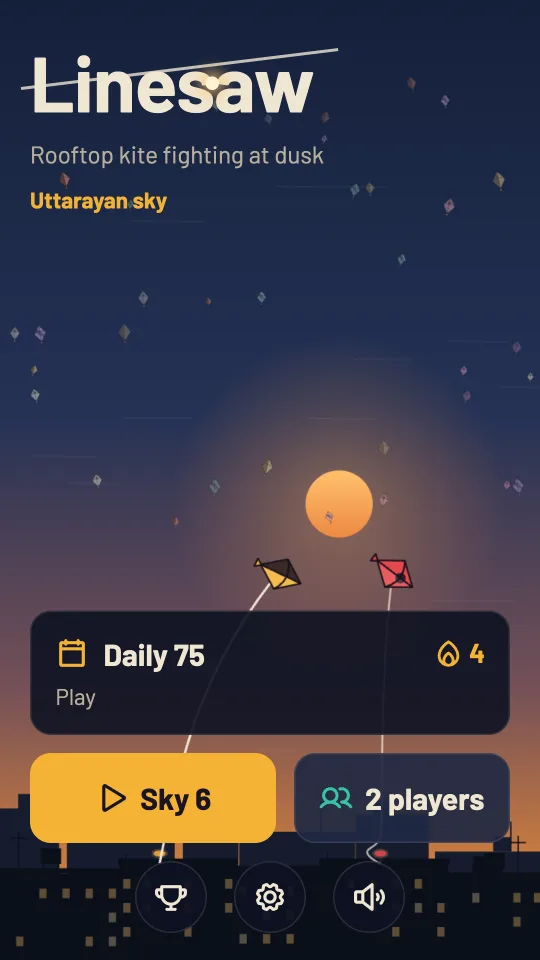
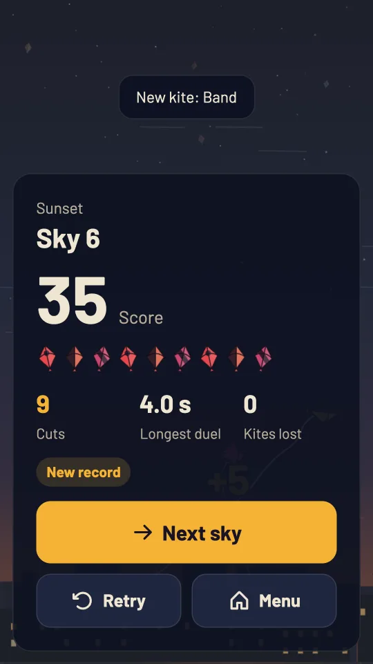
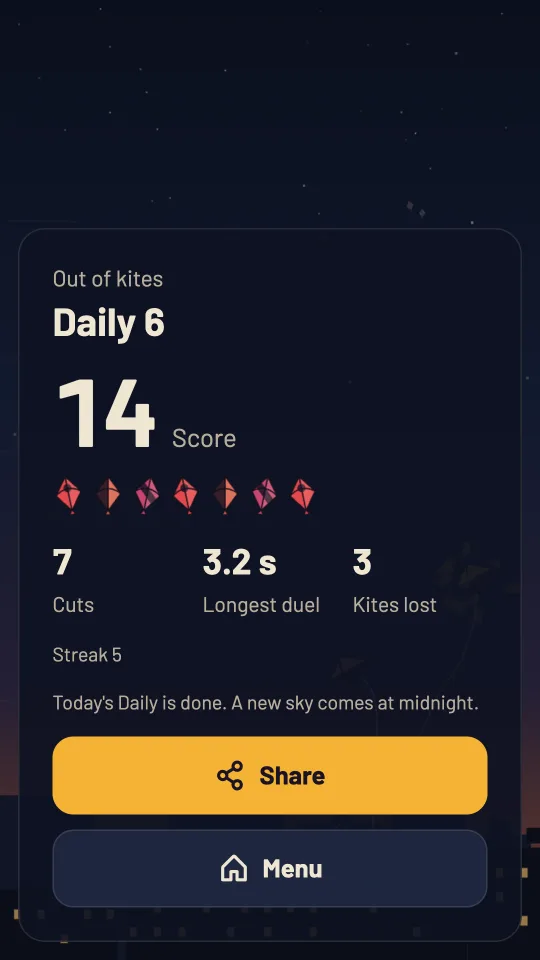
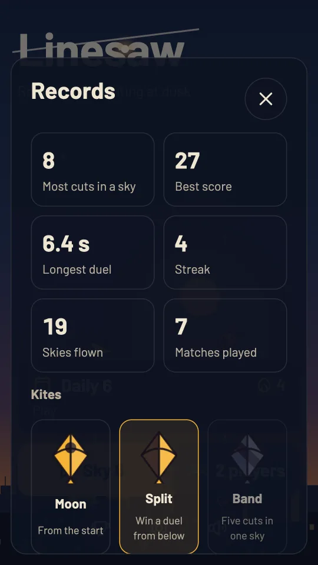

Kite fighting for two, on one phone
Rooftop duels at dusk. Hold to pull, let go to turn, and cut their line before they cut yours.


Put the phone between you and fly
The left half of the screen holds the left rooftop's line and the right half holds the right one's. Both kites handle exactly the same and the wind leans neither way, so the only difference is timing. Each pench starts after a count of three, and the first to cut three lines wins the best of five.
No account, no room to join, no internet. It works on a bus, on a terrace or at a family gathering where the signal is weak, and on a computer two people can share a keyboard: A for the left rooftop, L for the right.

How to play
Hold to pull line
While you hold, your fighter kite stops turning and darts the way its nose points. The line goes taut and the kite climbs or dives fast. On first launch a short lesson with three rings teaches this in about fifteen seconds, then puts you in your first duel at half speed.
Let go to give slack
The moment you let go, the kite slows, drifts with the wind and its nose starts to turn, slowly at first and then faster. A dotted line from the nose shows where a pull would send you. Steering is all timing: let go, wait for the dots to point where you want, then hold.
Cross their line
When two lines cross they catch, and a bright spark marks the crossing. Both lines now wear where they touch. A fraying mark under the crossing shows each line's strength, three strands, then two, then one, and the line that is winning glows gold.
Saw in bursts
Pulling saws fastest, but a line you keep pulling heats up, and you can see the red creep out from the crossing. A hot line wears itself. Short pulls with short breaths of slack beat both holding on and hanging loose, and the first line to wear through snaps.
Fly until sunset
A solo sky lasts 75 seconds, which is the time the sun takes to sink behind the rooftops. You have three kites, and rivals rise one at a time. Each cut scores one more than the last as long as you keep your kite, up to five a cut. Clear the sky to move on, or retry it as often as you like.

Three rivals, each with a habit

Every cut is line against line
Speed and angle decide a duel as much as the pull. A kite that darts into the crossing saws harder than one that drifts in, and lines that cross square cut faster than lines that only graze each other.
Rises well above your kite, then dives across your line. Its pulses are slow and regular, so count them and saw in the gaps.
Darts straight at your line again and again and holds too long. Stay loose for a moment and let its own line burn.
The third rival, the drifter, hangs slack and floats across your line with tiny pulls. It barely saws, so it rewards an attack: dart in and cut before it drifts away. The first skies are gentle, and rivals sharpen slowly over many skies.
Tips for longer skies
Most early losses come from holding too long or flying straight into a line. These habits fix both.
Pulse, do not hold
A rhythm of roughly half a second of pull and a third of a second of slack wins most duels. Holding feels strong, but after about a second your line is fully hot and starts cutting itself.
Watch the red
Heat shows as red creeping along your line from the crossing. When you see it, let go for a breath. It cools in under half a second and you can saw again at full strength.
Come in fast and square
Turn so your nose points across the rival's line, then pull to dart through it. Speed and a square crossing both add to your saw, so a slow kite sliding along a line cuts at a fraction of the strength.
Aim with the dots
While you are slack, the dotted aim line sweeps round with the nose. Press a moment before it reaches your target, because the nose keeps turning while your thumb comes down.
Protect your run
Losing a kite resets your run of cuts, and the next kite launches a second later. When your multiplier is high, take duels you can win and back away from the ones you cannot.
Retry is not a step back
A sky you run out of kites in, or leave, stays your next sky. Fly it again until you clear it at sunset with at least one cut; the menu then moves you on.
In two players, rest your thumb early
A thumb already resting on its half during the count launches the kite at go. Start your touch a little inside the side of the screen, since a swipe from the very edge is the phone's Back gesture.
Fly from below
Winning a duel while your kite sits lower than the rival's unlocks the Split pattern, and five cuts in one sky unlocks Band. Patterns change the look only; every kite flies the same.

One Daily sky for everyone
Every day brings one sky with the same wind, gusts, rivals and rooftops for every player, numbered from your own calendar date. Fly it once for your score and your streak. Then share a card with no spoilers in it, just your cuts, the kites you lost and your longest duel:
Linesaw 6 🪁🪁🪁🪁🪁🪁🪁 ⚔️ 3.3s 💔 1
The link on the card opens that same sky in a browser, so a friend can fly your day without installing anything and see how they compare.
The Uttarayan sky, 10 to 16 January
During the week of Makar Sankranti the game's evening fills with distant kites from other rooftops and the light turns warmer. Nothing to download: on those dates every sky, solo, Daily and two player, takes on the festival look by itself.

In pictures



Free, with ads you can remove
The Android app is free with ads. Ads never appear while you fly, and never before, during or after the Daily. A full screen ad can come only when you press Next after a solo sky or a two player match, and not in your first three. Rewarded ads are always your choice: watch one for a spare kite when your third kite is cut, or for a second go at today's Daily.
Remove ads is an optional one-time purchase through Google Play. It removes the ads between skies and matches for good and gives the rewarded bonuses without an ad.
In the browser, the same game plays with your progress kept in this browser, and on wide screens an ad sits beside the game, never over it. How each version handles your data is in the privacy policy.